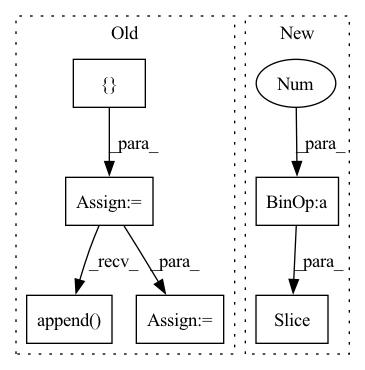

Pattern ID :37107
Before Change
self.num_patches = self.patch_embed.num_patches
// Build up each hierarchical level
self.ls_pos_embed = []
self.ls_transformer_encoder = nn.ModuleList([])
self.ls_block_aggregation = nn.ModuleList([])
dpr = [x.item() for x in torch.linspace(0, drop_path_rate, sum(depths))] // drop path rate
self.feature_info = []
for level in range(self.num_levels):
// Positional embedding
// NOTE: Can"t use ParameterList for positional embedding as it can"t be enumerated with TorchScript
pos_embed = nn.Parameter(
torch.zeros(1, self.num_blocks[level], self.num_patches // self.num_blocks[0], embed_dims[level]))
self.register_parameter(f"pos_embed_{level}", pos_embed)
self.ls_pos_embed.append( pos_embed)
// Transformer encoder
self.ls_transformer_encoder.append(nn.Sequential(*[
TransformerLayer(
dim=embed_dims[level], num_heads=num_heads[level], mlp_ratio=mlp_ratio, qkv_bias=qkv_bias,
drop=drop_rate, attn_drop=attn_drop_rate, drop_path=dpr[sum(depths[:level]) + i],
norm_layer=norm_layer, act_layer=act_layer)
for i in range(depths[level])]))
self.feature_info.append(dict(
num_chs=embed_dims[level], reduction=2,
module=f"ls_transformer_encoder.{level}.{depths[level]-1}.mlp.fc2"))
// Block aggregation (not required for last level)
if level < self.num_levels - 1:
self.ls_block_aggregation.append(
BlockAggregation(embed_dims[level], embed_dims[level+1], norm_layer, pad_type=pad_type))
else:
// NOTE: Required for enumeration over all level components at once
self.ls_block_aggregation.append(nn.Identity())
self.ls_pos_embed = tuple(self.ls_pos_embed) // static length required for torchscript
// Final normalization layerAfter Change
self.block_aggs = nn.ModuleList([])
drop_path_rates = [x.item() for x in torch.linspace(0, drop_path_rate, sum(depths))]
for lix in range(self.num_levels):
dpr = drop_path_rates[sum(depths[:lix]):sum(depths[:lix+1 ])]
self.levels.append(NestLevel(
self.num_blocks[lix], self.block_size, self.seq_length, num_heads[lix], depths[lix],
embed_dims[lix], mlp_ratio, qkv_bias, drop_rate, attn_drop_rate, dpr, norm_layer,In pattern: SUPERPATTERN
Frequency: 3
Non-data size: 6
Instances Fragment ID: 105619161
Project Name: feng-lab/pytorch-image-models
Commit Name: b11d949a06f4c19be616aba25e49bf33d13a6b23
Time: 2021-07-03
Author: alexander.soare159@gmail.com
File Name: timm/models/nest.py
M Class Name: Nest
N Class Name: Nest
M Method Name: __init__(19)
N Method Name: __init__(19)
M Parent Class: nn.Module
N Parent Class: nn.Module
M File Name: timm/models/nest.py
N File Name: timm/models/nest.py
M Start Line: 222
M End Line: 284
N Start Line: 252
N End Line: 306
Before Change
or (batch_size, num_blocks*growth_rate, n_bins, n_frames)
x = input
stacked = []
stacked.append( input)
for idx in range(self.num_blocks):
if idx != 0:
x = torch.cat(stacked, dim=1)
x = self.net[idx](x)
stacked.append(x)
After Change
x_residual = x_residual + x
in_channels = growth_rate[idx]
stacked_channels = sum(growth_rate[idx+1: ])
sections = [in_channels, stacked_channels]
if idx != num_blocks - 1: Fragment ID: 105619167
Project Name: tky823/dnn-based_source_separation
Commit Name: 8fb5cd5f4f8b4a435d058aef6204904f657abea0
Time: 2021-06-06
Author: 40362510+tky823@users.noreply.github.com
File Name: src/models/d3net.py
M Class Name: D3Block
N Class Name: D3Block
M Method Name: forward(2)
N Method Name: forward(2)
M Parent Class: nn.Module
N Parent Class: nn.Module
M File Name: src/models/d3net.py
N File Name: src/models/d3net.py
M Start Line: 357
M End Line: 367
N Start Line: 414
N End Line: 430
Before Change
or (batch_size, depth * growth_rate, n_bins, n_frames) if type(growth_rate) is int
x = input
stacked = []
output = []
stacked.append( input)
for idx in range(self.depth):
if idx != 0:
x = torch.cat(stacked, dim=1)
x = self.net[idx](x)
stacked.append(x)
After Change
x_residual = x_residual + x
in_channels = growth_rate[idx]
stacked_channels = sum(growth_rate[idx+1: ])
sections = [in_channels, stacked_channels]
if idx != depth - 1: Fragment ID: 105619164
Project Name: tky823/dnn-based_source_separation
Commit Name: 8fb5cd5f4f8b4a435d058aef6204904f657abea0
Time: 2021-06-06
Author: 40362510+tky823@users.noreply.github.com
File Name: src/models/d2net.py
M Class Name: D2Block
N Class Name: D2Block
M Method Name: forward(2)
N Method Name: forward(2)
M Parent Class: nn.Module
N Parent Class: nn.Module
M File Name: src/models/d2net.py
N File Name: src/models/d2net.py
M Start Line: 51
M End Line: 62
N Start Line: 51
N End Line: 67